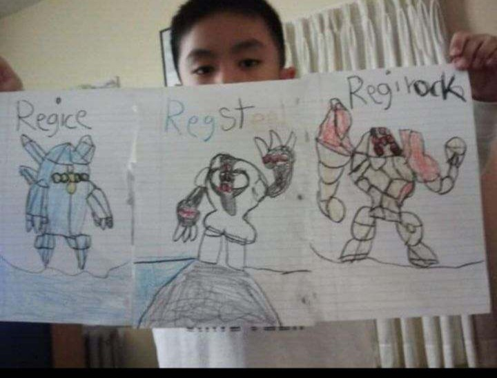

Exercise #1 - Getting to know me, Anthony!
Brief Bio
What up y'all, my name's Anthony (but you probably already know that from the title above)! I'm the son of two Vietnamese immigrants, but a born and raised Springfield, MA resident. I graduated from Springfield Technical Community College with an Associates in Fine Arts, now studying Art, Design, & Animation at UMASS Amherst!
This project, and those which subsequently follow it, are products of my Web Design class I took in my Junior Year to create a portfolio website from the ground up. Pardon the rough edges, this will be my first time using HTML & CSS. But there is a beauty in the unwelcoming mess, follow along with me on my development journey and hopefully we can grow together.
Contact Information
Hoping these don't age like milk into deadlinks - again, please don't mind the mess!
Less-Brief Bio
Since I was a kid, I absolutely loved indulging in creativity. I remember being maybe 5-6 years old, frustrated with the limitations of paper. So frustrated in fact, that I nearly got my mom in trouble with the landlord for dousing our walls with crayon. My mom has (hopefully) forgiven me now and has been my biggest supporter throughout this entire journey. Albeit, I don't think she knows what I do, but unless I was a doctor I don't think she would.
My dream is to learn as much as possible to simultaneously enter the animation/entertainment/design industries. But I also have quite the fondness for marketing & advertisering, so that would also be cool! My hobbies include working out, playing games, and trying my best to meet new people. On that same note, my greatest fear is missed potential. Having something be possible and not even trying, not making that leap---it's like a death sentence to me.
